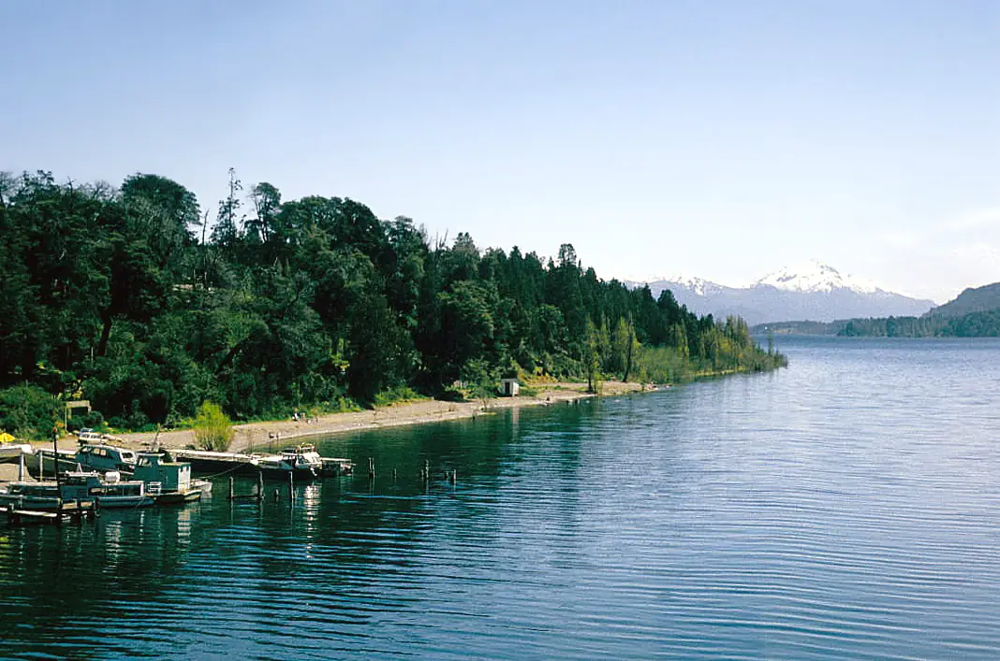

Lac Nahuel Huapi — Playa Bonita
Río Negro, Argentine · kayak, paddle, baignade

Grand lac glaciaire du parc national Nahuel Huapi, au pied des Andes, à Bariloche. Playa Bonita, face à l’île Huemul, est un point de départ apprécié pour le kayak et le paddle.
- Lieu
- Río Negro, Argentine
- Niveau
- Intermédiaire
- Activités
- kayak, paddle, baignade
- Type d'eau
- lake
- Coordonnées
- -41.12, -71.39 (position approximative du secteur)
Dangers à connaître
- Eau très froide même en été : risque d’hypothermie en cas de chute.
- Vent fort et vagues soudaines sur le lac.
Le conseil d'Ocean Buddy
Sors le matin : le vent se lève souvent l’après-midi et creuse vite le lac.
Ouvrir dans Ocean Buddy Télécharger sur l'App Store
Source : Fiche Ocean Buddy · septembre 2026 · à vérifier localement.